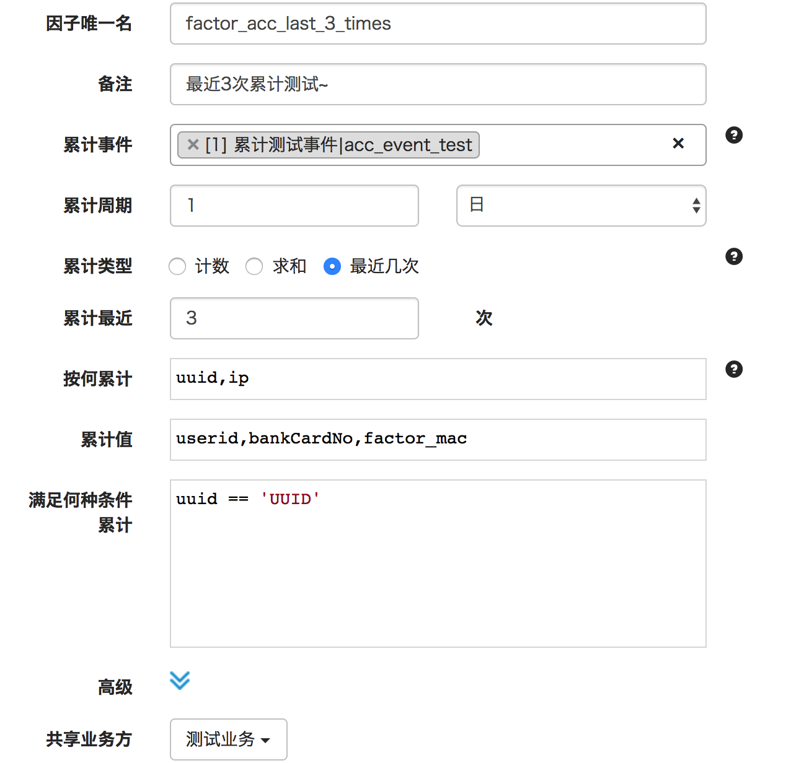

说明：Zeus累计最近几次使用指南
需求背景
- Zeus累计只能进行计数、求和，而无法返回真实的历史累计数据
- 希望能获取同一设备同一ip下最近3次用户申请贷款的历史详情，比如userid、bankCardNo等数据
- 由此累计新增了一种类型：最近几次，累计最近几次将要获悉的字段写在累计值中，并设置要累计的次数，最后会返回一个带有各字段历史数据的字符串JSON
配置演示

配置解释
- 累计周期：选择数据保留的最长时间，超过这个时间的数据会过期而被删除
- 累计类型：选择 最近几次 类型
- 剔除重复项：最近几次 累计类型没有剔除重复这一项，默认Zeus会对累计值进行去重，且不可更改
- 累计最近的次数：上图显示累计最近3次
- 按何累计：与计数和求和类型一致
- 累计值：与计数和求和类型不同，最近几次的累计类型的累计值可以为多项因子和参数，用英文逗号间隔。累计值只能在尾部添加或删除参数/因子操作，不能修改替换累计值中的参数/因子以及在首部进行添加/删除操作，否则累计因子结果会出现错乱。
- 累计自身：最近几次 累计类型默认累计自身为否，且不可更改
累计最近几次相当于SQL的top语句，按时间逆序排列
select top 最近几次
from 累计数据表
where 满足何种条件累计
group by 按何累计
order by time desc返回解释
假设发送（写）了四次累计，上下文如下：
|
时间戮 |
userid |
bankCardNo |
factor_mac |
|---|---|---|---|
|
1525270222 |
123 |
111 |
ABC |
|
1525270666 |
456 |
222 |
DEF |
|
1525270888 |
789 |
333 |
GHI |
|
1525270999 |
123456789 |
444 |
JKL |
那么对于同一个Key，上图配置的累计因子的结果为：
[
{
"userid": "123456789",
"bankCardNo": "444",
"factor_mac": "JKL"
},
{
"userid": "789",
"bankCardNo": "333",
"factor_mac": "GHI"
},
{
"userid": "456",
"bankCardNo": "222",
"factor_mac": "DEF"
}
]- 返回是按时间由近及远（由大到小）的顺序排列的记录组成的列表JSON
- 返回的所有字段的值都是字符串型，没有转化成对应参数或因子的真实类型
使用配置
- 先通过jsonString.toListAndGetOne扩展函数获取指定下标的map数据
- 再通过string.getFromJsonMap扩展函数获取指定字段的值
- 进行数据类型转换，如果是string类型则无需转换
例如下面表达式可以获取最近一次（前一次）的userid
long(string.getFromJsonMap(jsonString.toListAndGetOne(factor_acc_last_3_times, 0), 'userid'))注意的问题
- 在发送累计时要求配置的累计值的所有参数/因子全部在上下文中存在，否则发送累计无法通过检查而失败
- 在界面上修改（减少）累计最近的次数时，不会立即生效，因为目前是在下一次发累计请求时生效，因此在修改之后下一次发累计之前读累计数据是比实际情况多的，不过对策略影响较小，因为多读的数据理论上不应该被使用。
- 累计最近几次功能默认都是去重的，去重是按照配置的累计值里的所有参数/因子拼接成的字符串来的
举例
如果发累计的情况如下：
|
序号 |
时间戮 |
userid |
bankCardNo |
factor_mac |
|---|---|---|---|---|
|
1 |
1525270222 |
123 |
111 |
ABC |
|
2 |
1525270666 |
456 |
222 |
DEF |
|
3 |
1525270888 |
789 |
333 |
GHI |
|
4 |
1525270999 |
789 |
333 |
GHI |
那最近3次累计数据的返回结果为：
[
{
"userid": "789",
"bankCardNo": "333",
"factor_mac": "GHI"
},
{
"userid": "456",
"bankCardNo": "222",
"factor_mac": "DEF"
},
{
"userid": "123",
"bankCardNo": "111",
"factor_mac": "ABC"
}
]第三次发送的累计数据会被去重丢失
如果想保留第三次发送的累计数据，则需要在累计值的配置上做文章
- 如果累计值每秒都不会有重复的现象出现，那么可以添加一个时间戮参数（由上游传过来的）或者添加一个因子，表达式为：currentTime()
- 如果累计值随时都会有重复的现象出现，那么可添加一个请求的唯一标识或流水号
- 如果累计值有重复，但是希望Zeus进行去重，那么则无需改变，天然支持